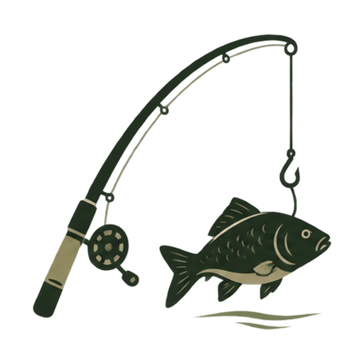
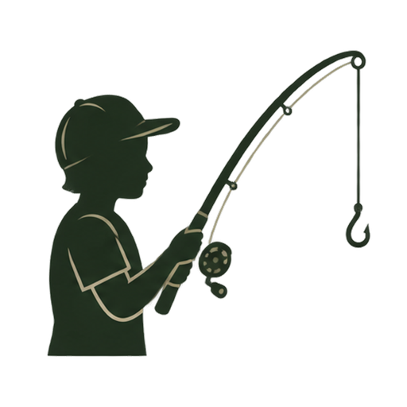
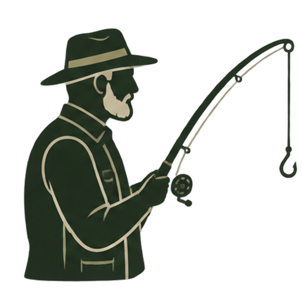

Felnőtt sportjegy
Péntek – Szombat – Vasárnap
5 000 Ft / fő


Felnőtt sportjegy
Péntek – Szombat – Vasárnap
5 000 Ft / fő
Felnőtt sportjegy
Kedd – Csütörtök
4 000 Ft / fő

Gyerek sportjegy
14 éves korig, Kedd – Vasárnap
3 000 Ft / fő

Nyugdíjas sportjegy
Kedd – Vasárnap
4 000 Ft / fő
Vendégjegy
Felnőtt
2 000 Ft / fő
Halas jegy
9 800 Ft / fő
A halas jeggyel az alábbi lehetőségek egyikének megfelelő halmennyiség vihető el:
10 000 Ft / fő / éj
A szállással kapcsolatos további információkat a Szállás menüpontban találod.

Keddtől vasárnapig, reggel 7-től 18 óráig
A horgászatra a mindenkor hatályos jogszabályok és a Farmer Horgásztó horgászrendje érvényes. Részletek a foglalási és szolgáltatási feltételekben.